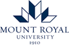

We are a group of students that created this platform with the purpose of helping Computer Science and BCIS students find future professions in their fields.
Our team consists of three first-year MRU BCIS students:
Harith Obeid
Vrij Sheth
John Ogunbote

MRU Logo
About Mount Royal University
Mount Royal is a university located in Calgary, Alberta. It was established in 1910 but was originally a college before turning into a university in
2009. Around 15,000 students currently attend MRU. Mount Royal is the 2nd biggest university in Calgary trailing behind the University of Calgary,
offering around 60 different programs.
MRU Campus
Careers in Computer Science
Software Engineering:
Software Engineering involves putting intelligence and reliability into the computing devices and systems our modern world relies on. Software engineers are involved in every phase of software development from coding the software to designing the processes required to design, test and develop it.